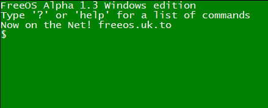

See blog here
FreeOS is a free, open-source, operating system written in the popular language C++.
You can browse the archive here (alpha 1.3 - current version). Our latest release is
alpha 1.3 and you can get it from the archive. The archive also includes
the raw .cpp files so you can contribute by sending your edited version of that .cpp file
to unlimitedminecraft2011@gmail.com
Below are some screenshots of the OS:

Home screen of alpha 1.3
alpha 1.3 BSOD screen (can be triggered with dev.bsod)